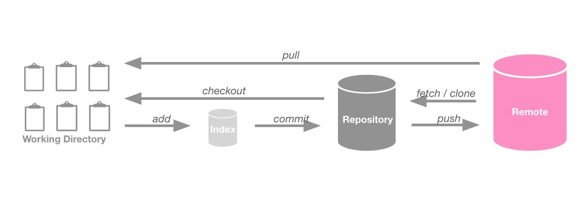
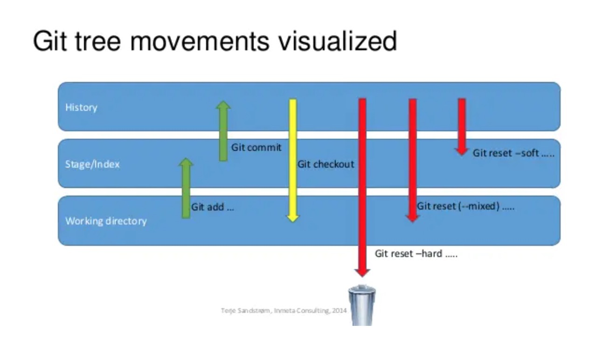

- 仓库从无到有
- 从本地开始
- 从远程开始
- 其他分支处理命令
- 解决提交错误
- git rebase 和 git merge 的区别
- 重要的 mvn 命令
- 解决冲突的方式之一
- 处理本地分支与远程绑定的分支不同名
- git revert 和 git reset
- git 在 MAC 的 terminator(命令行)下自动显示当前分支
- 参与开源项目更新fork仓库
- git stash 切换分支，并存储正在进行开发的代码
- Arcanist 命令
- 基于现有分支的 commit 迁出新的分支
仓库从无到有
本地生成 ssh 秘钥，如果不嫌麻烦当然可以不设置，使用 HTTPS 即可
我的配置是 Eclipse 是 HTTPS，使用 GitHub，用来编写笔记，但是 HTTPS 需要记住密码，不然每次都需要填
IDEA 使用 SSH，用来工作提交代码，使用 Gitlab。
ssh-keygen -t rsa -C “注册邮箱”
id_rsa.pub 文件添加到 Git 的秘钥管理处，实际任何遵守 Git 协议的分布式版本控制基本流程基本是相同的，不必纠结用的是哪家产品。
如果是长期使用的电脑你可以配置全局
- git config –global user.name “账号名”
- git config –global user.email 邮箱
- git config –list 查看配置结果
当然你也可以只配置临时变量 去掉–global 即可，因为我需要往牛客，码云，GitHub，Gitlab 提交，所以这种是很有用的。因此我只需要修改提交的临时地址。
从本地开始
- touch README.md 添加一个文件，用于注释、说明，在仓库的顶级目录下则会被显示作为该仓库或文件的说明。
- git init 初始化本地仓库。
- git add README.md 将上述文件添加到暂存区
- git commit -m “first commit” 将暂存区的文件进行添加到本地分支。
- git remote add origin https://github.com/jxnu-liguobin/SpringBoot-Seckill.git 添加远程分支，一般名称同本地分支， 已经存在则绑定本地与远程，该操作只能在 init 后执行，且只能执行一次。
- git push -u origin master 提交本地到 master 主分支，默认本地 master，实际开发时这里是开发的 sprint 分支，意为迭代。
上面的暂存区，分支，工作区的存储模型借鉴自 CyC2018

详细的 Git 流程

从远程开始
当然你也可以从远处拉下一个项目，就像这样
git clone git@github.com:jxnu-liguobin/cs-summary-reflection.git 此处的连接可以是 SSH 也可以是 HTTPS，取决于你的爱好，推荐 SSH。
如果是别人的仓库则你需要有权限否则可以拉取，无法提交，权限是指你的公钥必须要被添加到远程仓库的秘钥管理中心，公司一般有统一管理 SSH 的平台。
如果你有权限，你可以在本地创建一个自己的仓库和一个开发分支，并将 master 合并到本地这个分支上来只需要：
git checkout -b newBrach origin/master 在 origin/master 的基础上创建 newBrach 分支，其中-b 表示创建并切换到 newBrach 分支，origin/master 表示源分支 master。 需要注意的是，这种方法使得当前分支与远程的 master 分支相关联了，在 IDEA 提交的时候一不小心就会提交到 master 分支了。具体看下面“处理本地分支与远程绑定的分支不同名”部分
其次你还可以先创建一个本地分支 git checkout -b newBrach
再更新或合并 git merge master 表示使用 master 更新当前分支，因为是第一次创建所以是没有冲突的，实际如果存在冲突则需要解决冲突。
如果觉得 Git 不方便你可以使用图形化界面分支管理工具 Sourcetree。
你也可以更加暴力直接在本地某一个空分支下 pull 拉取 master。
接下来你只需 push，如果没有配置默认的提交分支，则提交的时候还需声明提交分支。
像这样 git push -u origin newBrach 如果你不填 origin 则默认是 master 。
你还可以强制提交
像这样 git push -u origin master –force 但并不建议使用，慎用。
其他分支处理命令
分支修改
- git branch 分支名称 在本地新建一个分支
- git checkout 分支名称 切换到你的新分支:
- git push origin 分支名称 将新分支发布在 github 上
- git branch -d 分支名称 在本地删除一个分支
- git push origin :分支名称 (分支名前的冒号代表删除) 在 github 远程端删除一个分支
如果你需要直接使用 git pull 和 git push，则你需要设置以下
- git branch –set-upstream-to=origin/master master
- git branch –set-upstream-to=origin/分支名称 分支名称
- git config –global push.default matching 以上建议忽略，实际开发这里每个月都需要修改开发的迭代分支，还不如别设置了。
解决提交错误
如果你是 commit 提交错误了你可以这样 ：
git reset 使得分支的上的代码回滚到暂存区 （–hard 版本号，不加即回滚最后一次提交 commit，–files 指定文件），更为常见的使用方式是： 使用 git log 查看目标 commit 的 hashId 值，然后使用 git reset hashId，此操作将代码回滚到 hashId 所在的 commit（此 commit 之后的所有代码变为未提交状态）， 也就是说此举保留了所有从此 commit 开始的提交，然后你可以开始重新提交这些修改
如果你是 add 添加错了你可以这样：
git checkout 暂存区回滚到工作区（回滚最后一次 add 操作，–files） -b branch 在本地创建并切换到 branch 分支，前面以前提到到，-d 是删除，切记
如果需要删除索引中的 myfile 文件但不删除文件本身，你可以：git rm –cached myfile 然后提交即可
PS:使用 IDEA 时，在未进行 add 时，执行 IDEA 提供的 revert 菜单也可以回退修改，还可以手动选择需要回退的文件，很方便。
git rebase 和 git merge 的区别
- git pull = git fetch + git merge
- git pull –rebase = git fetch + git rebase 重点是不会产生新的 commit 请求。
远程跟踪分支已更新(Git 术语叫做 commit)，需要将这些更新取回本地，这时就要用到 git fetch 上面已经提及到了。
如果你想让”mywork”分支历史看起来像没有经过任何合并一样（看不到合并的路径，不留提交痕迹），可以用 git rebase。
而 git merge 的合并会出现痕迹，造成菱形依赖，看起来很困惑，所以推荐使用 git fetch + git rebase。

git rebase –abort 参数来终止 rebase 的行动，并且”mywork” 分支会回到 rebase 开始前的状态。
多人提交自己的代码，必须先更新本地为最新，否则再次提交将会被拒绝，如果拉取下的代码和本地自己的有冲突则需要自己去解决了。
你可以这样切换分支： git checkout mywork
然后执行 ：git rebase origin
这些命令会把你的”mywork”分支里的每个提交（commit）取消掉，并且把它们临时保存为补丁（patch）（这些补丁放到”.git/rebase”目录中）， 然后把”mywork”分支更新到最新的”origin”分支，最后把保存的这些补丁应用到”mywork”分支上。 当’mywork’分支更新之后，它会指向这些新创建的提交(commit)，而那些老的提交会被丢弃。 如果运行垃圾收集命令(pruning garbage collection)， 这些被丢弃的提交就会删除。（请查看 git gc）
在 rebase 的过程中，也许会出现冲突（conflict）。 在这种情况，Git 会停止 rebase 并会让你去解决 冲突； 在解决完冲突后，用”git-add”命令去更新这些内容的索引（index）， 然后，你无需执行 git-commit，你只要执行:
git rebase –continue git 便会自动继续合并
如果你需要查看仓库修改状态， 你可以使用：git status
你还可以查看 git 的日志： git log -p
你可以查看对比两次文件内容具体修改了什么 ：git diff
更加具体的对比： git diff HEAD – filename
可以查看工作区和版本库里面最新版本的区别 HEAD 表示当前版本，也就是最新的提交。上一个版本就是 HEAD^，上上一个版本就是HEAD^^， 往上 100 个版本写 100 个 “ ^ ” 比较容易数不过来，所以写成HEAD~100。HEAD~2 相当于 HEAD^^
如果你需要取回远程的某些分支你可以这样： git fetch origin master 取回 origin 主机的 master 分支
如果你需要取回所有分支你可以这样： git fetch
你只有将远程分支 fetch 下来后才可以 checkout 切换分支
- git checkout master #//取出 master 版本的 head。
- git checkout tag_name #//在当前分支上 取出 tag_name 的版本
- git checkout master file_name #//放弃当前对文件 file_name 的修改
- git checkout commit_id file_name #//取文件 file_name 的 在 commit_id 的版本。
- git checkout – hello.rb #//这条命令把 hello.rb 从 HEAD 中签出。//其中 commit_id 为 git commit 时的 sha 值，每次提交都有唯一值。
如果你搞错了很多文件，可能需要恢复所有，你可以这样： git checkout .
这条命令把当前目录所有修改的文件 从 HEAD 中签出并且把它恢复成未修改时的样子。慎用
其他参数
- git rebase –abort 会回到 rebase 操作之前的状态，之前的提交的不会丢弃；
- git rebase –skip 则会将引起冲突的 commits 丢弃掉；
- git rebase –continue 用于修复冲突，提示开发者，一步一步地有没有解决冲突，fix conflicts and then run “git rebase –continue”
重要的 mvn 命令
- mvn clean deploy 清理并发布
- mvn install -Dmaven.test.skip=true 跳过测试打包
- mvn dependency:tree 查看依赖树 IDE 的依赖没有成功下载的时候，可以使用该命令进行查看，此命令将自动下载本地没有的依赖， 如果此处下载成功，则说明是本地仓库缓存问题，导致找不到依赖
- mvn clean compile -U 编译 该参数能强制让 Maven 检查所有 SNAPSHOT 依赖更新，确保集成基于最新的状态，如果没有该参数， Maven 默认以天为单位检查更新，而持续集成的频率应该比这高很多。
解决冲突的方式之一
- 合并分支到本开发分支，或者git pull –rebase拉去下来
- 查看冲突文件，并去除冲突提示注释和冲突部分代码
- 执行git add 将修改完后的冲突文件添加进索引【stage 暂存区，位于工作区和当前分支之间】
- 执行git rebase –continue 继续合并
冲突的时候多注意查看提示和日志，一般 Git 都提供参考的解决办法
处理本地分支与远程绑定的分支不同名
本地是 branchA 分支，提交代码时却是和远程的 branchB 分支绑定的，此时提交会更新 branchB 分支，但是希望直接更新 branchA 分支的代码。 经过测试，使用 IDEA 的 checkout as 与 git checkout -b branchA origin/master 命令是相同效果：导致 branchA 分支与远程 master 绑定。 但实际一般我们需要 branchA 与远程 branchA 绑定。此时可以解除绑定，执行：
解除关联库 git remote remove origin
重新关联库 git remote add origin sshUrl
提交本地分支至远程 git push origin branchA
或者在 push 的时候在 IDEA 弹窗上方修改为 origin/branchA，这个点击的时候需要自己输入至少一个首字母才会提示可选分支，不智能。
git revert 和 git reset
git reset 主要用法：
git reset (–mixed) HEAD~1 回退一个版本，且会将暂存区的内容和本地已提交的内容全部恢复到未暂存的状态，不影响原来本地文件（未提交的也不受影响，更新 INDEX 索引区数据为当前 HEAD 所指提交对应的快照内容） git reset –soft HEAD~1 回退一个版本，不清空暂存区，将已提交的内容恢复到暂存区，不影响原来本地的文件（未提交的也不受影响，不更新 INDEX 索引区） git reset –hard HEAD~1 回退一个版本，清空暂存区，将已提交的内容的版本恢复到本地，本地的文件也将被恢复的版本替换（更新工作目录和索引一样）

必须注意，–hard 标记是 reset 命令唯一的危险用法，它也是 Git 会真正地销毁数据的仅有的几个操作之一。 其他任何形式的 reset 调用都可以轻松撤消，但是 –hard 选项不能，因为它强制覆盖了工作目录中的文件。 我们可以通过 reflog 来找回它。但是若该文件还未提交，Git 仍会覆盖它从而导致无法恢复。
git revert 主要用法：
- git revert HEAD 撤销前一次 commit
- git revert HEAD^ 撤销前前一次 commit
- git revert commit_id （比如:fa042ce57ebbe5bb9c8db709f719cec2c58ee7ff）
git revert 是提交一个新的版本，将需要 revert 的版本的内容再反向修改回去，版本会递增，不影响之前提交的内容。 通常情况下，上面这条 revert 命令会让程序员修改注释，这时候程序员应该标注 revert 的原因，假设程序员就想使用默认的注释， 可以在命令中加上-n 或者–no-commit，应用这个参数会让 revert 改动只限于程序员的本地仓库，而不自动进行 commit，如果程序员想在 revert 之前进行更多的改动，或者想要 revert 多个 commit。
当有多个 commit 需要撤销，有可能是连续的：
使用该命令可以将提交撤回到 commit_id_start 的位置：git revert -n commit_id_start..commit_id_end
或是不连续的：git revert -n commit_id_1 git revert -n commit_id_3
git revert 和 git reset 的主要区别：
- git revert 是用一次新的 commit 来回滚之前的 commit，git reset 是直接删除指定的 commit。
- 在回滚这一操作上看，效果差不多。但是在日后继续 merge 以前的老版本时有区别。因为 git revert 是用一次逆向的 commit“中和”之前的提交， 因此日后合并老的 branch 时，导致这部分改变不会再次出现，但是 git reset 是之间把某些 commit 在某个 branch 上删除，因而和老的 branch 再次 merge 时，这些被回滚的 commit 应该还会被引入。
- git reset 是把 HEAD 向后移动了一下，而 git revert 是 HEAD 继续前进，只是新的 commit 的内容和要 revert 的内容正好相反，能够抵消要被 revert 的内容。
git 在 MAC 的 terminator(命令行)下自动显示当前分支
1.修改的文件（任选其一）：.bash_profile、bashrc （全局 ~/.bash_profile）
2.在最后一行新增以下代码：
function git_branch {
branch="`git branch 2>/dev/null | grep "^\*" | sed -e "s/^\*\ //"`"
if [ "${branch}" != "" ];then
if [ "${branch}" = "(no branch)" ];then
branch="(`git rev-parse --short HEAD`...)"
fi
echo " ($branch)"
fi
}
export PS1='\u@\h \[\033[01;36m\]\W\[\033[01;32m\]$(git_branch)\[\033[00m\] \$ '
3.执行命令：source .bash_profile
参与开源项目更新fork仓库
假设自己的fork仓库是origin/master
- 先添加源库为upstream源，执行 git remote add upstream
https://github.com/kobylynskyi/graphql-java-codegen - 从upstream/master rebase，执行 git pull –rebase upstream master，此时本地会生成一个upstream/master
- 将本地的upstream/master merge或rebase到origin/master
- 推送到自己的fork仓库上，git push origin master，如果本地是最新代码，这里有冲突可考虑强推。
git stash 切换分支，并存储正在进行开发的代码
正在进行开发的代码表示没有 add 和 commit，但是代码又需要保留的场景需求，现在你想切换分支，但是你还不想提交你正在进行中的工作； 所以你需要储藏这些变更。为了往堆栈推送一个新的储藏，只要运行 git stash 命令，执行完该命令后，当前分支将变的干净，正在开发的代码被移除并存储在 git 中。
- 要查看现有的储藏，你可以使用 git stash list
- 想在新的分支重新应用你刚刚的储藏，可以执行 git stash apply。如果你想应用更早的储藏，你可以通过名字指定它，像这样 git stash apply stash@{2} ，其中 stash@{2} 是储藏的名字。如果你不指明，git 默认使用最近的储藏并尝试应用它，下面命令也是这种约定
- apply 命令将对文件的变更重新应用，但是被暂存的文件没有重新被暂存。想那样的话，你必须在运行 git stash apply 命令时带上一个–index 的选项来告诉命令重新应用被暂存的变更。如果你是这么做的，你应该已经回到你原来的位置取消储藏 git stash show -p stash@{0} | git apply -R
- 如果你沒有指定具体的某个储藏，git 会选择最近的储藏 git stash show -p | git apply -R
- 你可能会想要新建一个別名，在你的 git 里增加一个 stash-unapply 命令，这样更有效率。例如 git config –global alias.stash-unapply ‘!git stash show -p | git apply -R’
- 从储藏中创建分支可以使用 git stash branch name，如果你应用完 stash 后想马上删除，可以直接使用 git stash pop，而不是 git stash apply
- 如果你想查看 stash 之间的差异，你可以使用 git stash show 这条命令只考虑和最近的 stash 比较
- 如果你想删除所有 stash，你可以使用 git stash clear 这条命令会删除仓库中创建的所有的 stash，有可能不能恢复
- 你还可以使用 git stash drop stash@{1} 删除最近的一个 stash，要谨慎地使用，有可能很难恢复
Arcanist 命令
//其中 revision 表示 diff 编号，commit 表示 commit hash 值
- 比较与对应 commit 之间的差异，以此创建 Revision ，可以执行，arc diff commit，若无 commit 参数，默认范围是 git merge-base origin/master HEAD..HEAD
- 使用 –preview 参数，在 Web 中进行创建 arc diff –preview ，一般使用这种方法可以进行更好的代码 review，新版 arc 已经改成了–only
- 修改默认编辑器为 vim 可以执行，arc set-config editor vim ，默认是 nano
- 选择已有的 Revision 进行更新可以执行，arc diff –update revision
- 将 Revision 应用到本地可以执行，arc patch revision，该命令会自动创建名为 arcpatch-revision 的分支
- 将 Revision 合并到某一分支，默认为 master，arc land，使用 –preview 参数可预览哪些 commit 将会被 land
- arc land –revision revision –onto branch –preview
- –revision revision 参数用于指定 Revision
- –onto branch 用于指定 land 到哪一个分支
- –keep-branch 执行 arc land 会默认删除 Revision 对应的本地分支，land 时可使用此参数保留本地分支
- arc land 到 master 成功后会默认关闭对应 Revision，land 到其他分支时，若没有在 Diffusion 中配置，Revision 不会自动关闭，可以执行，arc close-revision revision，或者到 Web 中手动关闭
- 列出对应的 Repository Commit range（同 arc diff），对应的 Revision，在不确定 arc diff 将会提交哪些 commit 时，可以使用此命令进行确认，arc which commit
- 列出本地分支与 Revision 的对应关系及状态，arc branch
- 列出自己的 Revision 及对应状态， arc list
- 查看 arc 相关命令的具体执行过程，便于调试 –trace 加参数
- 下载diff过去提交的代码 arc patch –diff 68383 此处不是Revision id，是在history中查看的diff id
基于现有分支的 commit 迁出新的分支
例如，现在在 dev 分支上刚刚提交了 commit A 提交的 hashId 是 x，想在新分支 test 上继续在 dev 分支的 commit A 的基础上进行开发。
首先可以基于 master 的最新分支创建新分支 test 分支，先切回 master ，git checkout master，创建新分支 git checkout -b test，然后在新分支上执行 git cherry-pick x
参考: 简书 | 博客园 | CSDN1 | CSDN2 | Cyc2018
文档信息
- 本文作者：梦境迷离
- 本文链接：https://dreamylost.cn/wiki/Git%E7%9B%B8%E5%85%B3%E5%91%BD%E4%BB%A4/
- 版权声明：自由转载-非商用-非衍生-保持署名（创意共享3.0许可证）